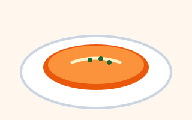
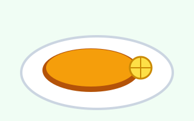
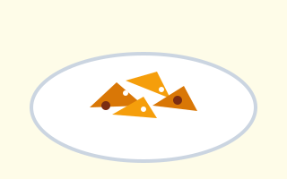
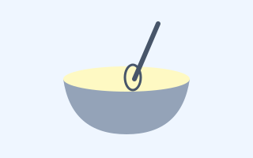
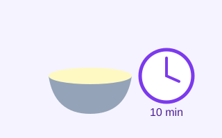

Kürbiscremesuppe
Eine cremige Suppe für kalte Herbsttage – fertig in 30 Minuten.
Veröffentlicht am
Stöbere in unseren Rezepten nach Kategorie.



Eine cremige Suppe für kalte Herbsttage – fertig in 30 Minuten.
Veröffentlicht am

Der österreichische Klassiker mit Rosinen und Zwetschkenröster.
Veröffentlicht am
Dünn geklopft und goldbraun herausgebacken – am besten mit Erdäpfelsalat.
Veröffentlicht am
Hauchdünner Teig, viel Apfel und Zimt – der Lieblingsnachtisch der Klasse.
Veröffentlicht am
Von Lena aus der 2BHIF,
Palatschinken sind dünne Pfannkuchen und schnell gemacht. Zuerst findest du die Zutaten für vier Personen, danach die Zubereitung Schritt für Schritt – zu jedem Schritt gibt es ein Bild.

| Zutat | Menge |
|---|---|
| Mehl | 200 g |
| Milch | 400 ml |
| Eier | 3 Stück |
| Salz | 1 Prise |
Mehl, Milch, Eier und Salz zu einem glatten Teig verrühren.

Den Teig 10 Minuten rasten lassen.

In einer heißen Pfanne dünn herausbacken und füllen.